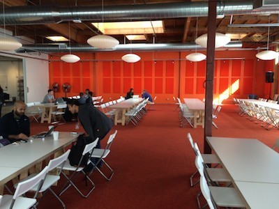
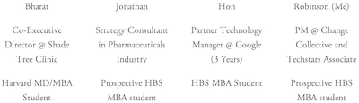
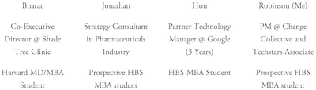
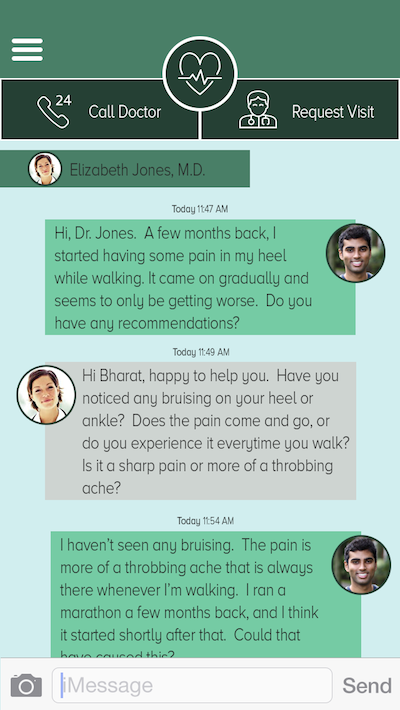
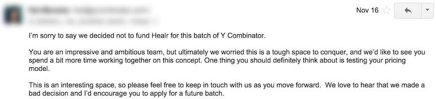

Late one night in early October, I met up with three guys at the Harvard iLab to discuss an idea. For the most part, we were all meeting each other for the first time and the idea was developed no further than three simple words: “Uber for Healthcare.” After a lengthy, disorganized meeting in which we discussed everything from user acquisition to product development to HIPAA compliance, we left the Lab that night with a collective goal to apply to the upcoming Y Combinator class.
Six weeks later, we flew to San Jose, CA to interview at YC. Although we were not invited to join the upcoming class, the 50 day journey leading up to the interview was just as rewarding as an invitation. This article is a reflection on that journey — what we did and what I learned.
I’ll start by first providing a little context: (a) who was on the team and (b) what the idea grew to become.
Our Team
Prior to starting this project, we were essentially strangers connected by one small common trait: we were all part of the Harvard 2+2 program. Each of us knew one other person in the group, but none of us connected the entire group. This proved to be a challenge that frequently set us back, as we were still learning how to effectively work together as a team. Another challenge we faced was simply availability of time. We all had other commitments, which left limited, late-night hours for us to work on this project.
 

The Idea
Back in the day — if you had a problem, your family doctor came to your house. Dr. Lewiston, or whatever — someone who knew your name, your kids, and how your small business was doing. He showed up at your house with that black bag and chatted with you about your life while he took your temperature and listened to your lungs. And while he was there, he would give you advice on things you should consider — so there was some preventative healthcare built into the whole experience.
But then America got big. Post- World War 2, the baby boom happened and population exploded. Cities got tall and we built these big tall hospitals to help healthcare fit in — but healthcare became this faceless thing with 1–800 doctors. Instead of your family doctor coming to you, you have to trek across town to ‘a’ doctor who ships you out the door as soon as possible.
We use intelligent software to bring healthcare back to the family doctor model in a sustainable way. By creating a distributed network of doctors and a distributed network of patients, we can give everyone a family doctor in their pocket.
Well, that was the elevator pitch that we (with a little help from our friends) came up with the night before our Y Combinator interview. Calling the idea half-baked at that point would have been generous and, even today, the team is still working to identify what it is that Healr does. I’ve taken a stab at summarizing the concept in the Napkin Pitch below:
Need
For many acute ailments, the effort required to visit a doctor to resolve the issue exceeds the pain level that the ailment causes the patient. The unknown severity of unresolved ailments, however, creates a sense of anxious uncertainty for many individuals.
Approach
We aimed to make your primary care physician as accessible as your best friend. Each user is matched to a doctor, whom the user may call or text for unlimited brief consultations. If necessary, the same doctor would also be available for on-demand home visits.
Benefits
- SMS consultations with a doctor offers users immediate reduction in uncertainty.
- Unlimited brief interactions allow users to discuss an ailment as it evolves.
- On-demand home visits with your doctor offers users a more convenient, personal experience.
Competition
We were up against all kinds of services that placed a emphasis on convenience.
- Telemedicine (e.g. Healthtap)
- On-demand home visits (e.g. Medicast)
- Discount concierge medicine (e.g. One Medical)
- Urgent care clinics
Preparing the Application
With the application deadline less than two weeks out, we decided to focus our effort on three tasks: (1) understanding who our users are, (2) demonstrating our ability to execute, and (3) collecting recommendations from YC alums.
Understanding Our Users
We did one and only one thing to begin the long expedition towards understanding our users: problem interviews. Problem interviews are nothing more than a scripted conversation with the intent to gain insight into who your users are, what unmet need they experience, and what motivates them. The process is long-winded and it takes quite a few iterations to get to a point where you can be confident in your understanding. We interviewed about a dozen or so people, which was just enough to scratch the tip of the iceberg.
Ability to Execute
In my opinion, a team’s ability to execute just about trumps any other quality. With only days under our belts on this project together, it was clear that we weren’t going to win on user understanding and we definitely weren’t going to win on any form of traction. We wanted to show that, as a team, we could tackle some big challenges in a short period of time. Our goal was to launch some form of an alpha before we submitted the application. What made this most difficult was that we still were unclear as to what exactly it was that we were launching an alpha of.
We pulled some strings within our networks and found two physicians who were willing to work with us on a very limited basis. Next, we emailed close to three hundred friends, family members, acquaintances, old co-workers, ex-girlfriends — you name it — about the idea to gain feedback and onboard them to the alpha. We also intercepted people in the street and posted flyers to add to that number. We essentially spammed everyone we knew, and some we didn’t.
The alpha service that we offered was simple. When a user was brought on, they were sent a welcome email from one of the two physicians. That welcome email contained a phone number that the user could text at any time in order to reach their assigned physician. We used Google voice, which forwarded any text messages to the physicians’ email addresses. Users were encouraged to reach out to their assigned physician to discuss whatever they wanted to discuss.
YC Alum Recommendations
I’m not sure how far recommendations from YC alums will carry an application, but they certainly can’t hurt. We uncovered YC alums in our existing networks, searched for YC alums who also went to our undergraduate universities, and lastly, tapped into the HBS network to find a few others. We found that we had about a 50% response rate on cold emails. Every alum we managed to chat with typically ran us through an impromptu ten minute mock interview before agreeing to drop us a recommendation.
The Application
I’ve pulled a copy of our application out into a Google Doc that anyone may view and comment on. The application certainly demonstrates our strengths/weaknesses and is very indicative of how early we were — i.e. the bullshit is not well-hidden. That said — two weeks later, despite my doubts, the application earned us a spot in the interview schedule.
Preparing for the Interview
The two weeks between being offered an interview and the interview, itself, were spent chipping away at expanding and improving the alpha while engaging in a flurry of mock interviews with YC alums.
Our alpha had expanded to serve about 70 users, 40% of which had contacted their physician at least once. The service itself was mostly unchanged, but we were able to chat with many of the alpha users in order to gain further insight into their needs.
We lined up about a half dozen mock interviews with YC alums, and did well to space them out throughout the full two weeks — allowing time for us to improve our responses between interviews. Many of our responses were inherently doomed, though, having spent so little time actually building our product and business.
We had heard several mixed rumors as to whether a demo of the product would be required for the interview or not. The technical skills of the team were lacking and time was short, so we decided not to focus our energy on a demo. We had already produced about 500 lines of garbage Java prior to deciding to lean out our alpha service, and we had also pulled together a Flinto prototype to sell our vision of the service to various folks — so, worst case scenario, we could always show one of the two if asked for some form of a demo.
T-1 Day to Interview
We arrived in Mountain View late Friday night and our interview wasn’t until Sunday morning. Saturday was wide open save for one mock interview we had scheduled in SF. We viewed this to be our first real opportunity to take some time to simply hang out with each other, not counting one late night round of beers at the HBS Grille.
So Saturday morning, we grabbed some chow and headed over to YC — just to check it out. After about an hour there (we were trying to get a little work done, but who were we kidding…), we slowly began wandering our way up the coast towards SF. We toured Google’s campus and visited the south end of the bay. We made it to SF an hour or two early, so we jogged over to UCSF Medical Center in order to find a few doctors to chat with about our service. After our mock interview, we crossed the Golden Gate to explore Sausalito, and then traveled back to Silicon Valley. We spent the remainder of the night waiting a laughable amount of time to get some authentic ramen. Apparently, ramen is popular out west. This gave us plenty of time to do a round-robin of mock interviews.
That night, we had a minor meltdown caused by the concern that we hadn’t put much thought into our pricing model. So, the four of us sat down and each independently calculated some pricing options that could have worked for us, as well as doing some bottom up market calculations. We then compared notes and landed at a ‘good enough’ answer.
Interview Day
After a full night sleep, we were up and ready to go. Fueled with coffee, we were at YC thirty minutes before our interview. I walked around and chatted with some of the other teams there in order to calm my nerves. Next thing I knew, we were in a small room with four YC partners.
The interview kicked off with the expected “What do you do?” — followed by “What does that actually mean?” After that, we dove into topics of HIPAA compliance and insurance, product vision and logistics, and pricing. We were never asked for a product demo and we never discussed the market (it’s pretty clear that healthcare is a big market). We left the interview with the shared agreement that we did the best we possibly could have, considering how little time we have actually spent on the project.
We all took the afternoon to go visit some friends in the area. I headed back up to SF to catch up with some college buddies and do a little more exploring. Around 8pm, as Hon and I were on our way back to the airport to catch a flight home, we received this email:
Reflecting on the Journey
If in early October you had told me that our team of strangers would be interviewing at YC in six weeks, I would have laughed in your face. It seemed next to impossible, but somehow we made it happen. Of course, not being invited to the class was disappointing, but the experience leading up to the interview was in many ways just as rewarding. Here’s a few things I’ve learned:
- Be honest with yourself. Your weaknesses are weaknesses, whether you acknowledge them or not. Acknowledging them allows you to grow. This especially applies to our business. I couldn’t agree more with their reasons for not inviting us to join the class. Healthcare is absolutely a difficult space and we had only been working on the project for six weeks. As for our pricing model — piecing it together the night before our interview is a pretty clear red flag.
- The startup world will always surprise me. This is something I learned a long time ago, but I had lost appreciation for it.
- Finding the right co-founders is important — this can not be overstated. A broad set of skills is desired, but cohesive working styles is necessary. Building a team is just as important as the business you are attempting to build. Our team faced two challenges: (1) We had just met each other and were still learning about each other’s abilities and working styles. (2) We had overlapping skill sets, which left us weaker in other areas. This is less concerning, as a cohesive core team can always expand to fill holes as the holes become an issue.
- Talking to people about your project is one of the best things you can do to learn early. When we sent out those several hundred initial emails, we received several dozen highly-critical replies. Our friends raised questions, comments, and concerns that we would have never thought of.
- If you are lucky enough to earn a seat in a top accelerator, it can do incredible things for your business. The process of applying for that seat, however, can totally stall any progress made towards actually building the business. In other words, the demands of an accelerator application and the demands of building a business only partially align. Choose wisely.
- Hacking together some low-fidelity alpha is one of the best things for a team to do to validate both the business model and the ability of the team. Plus, seeing actual users engage with your product/service gets the team pumped up.
- There will always be more work to do than what is possible to get done. Without leadership or aligned goals, determining priority in tasks can be difficult. This caused us to have many disorganized and unproductive meetings. I recently read The Advantage, which shares tactics that I believe offer a solution to this problem.